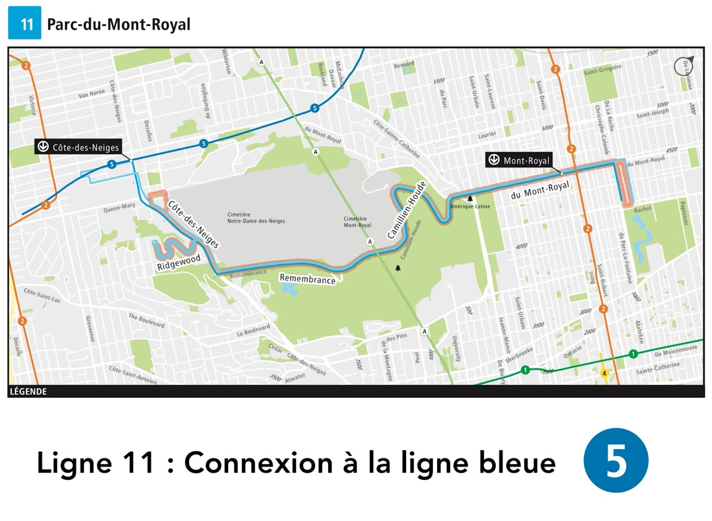
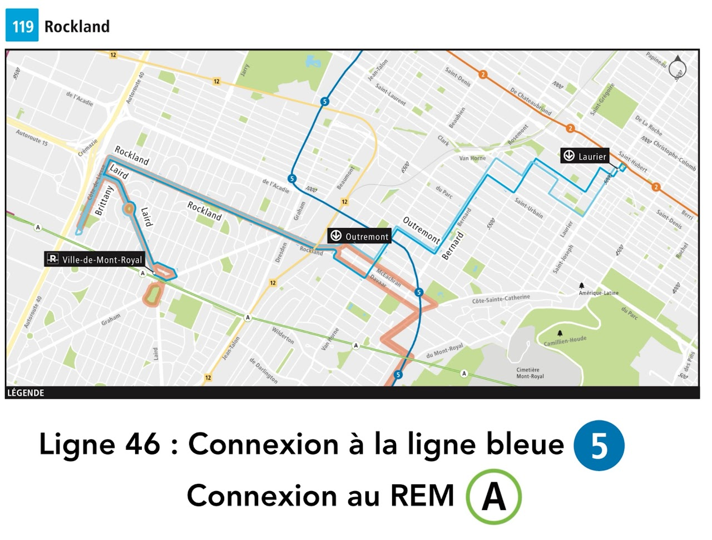
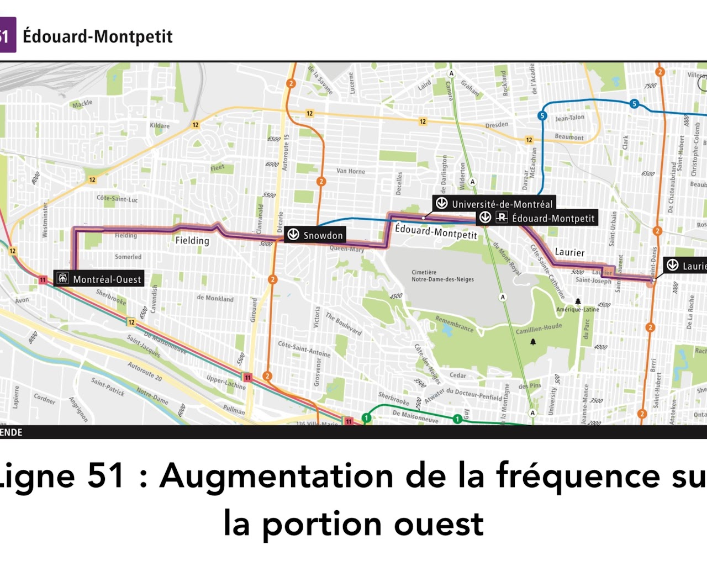
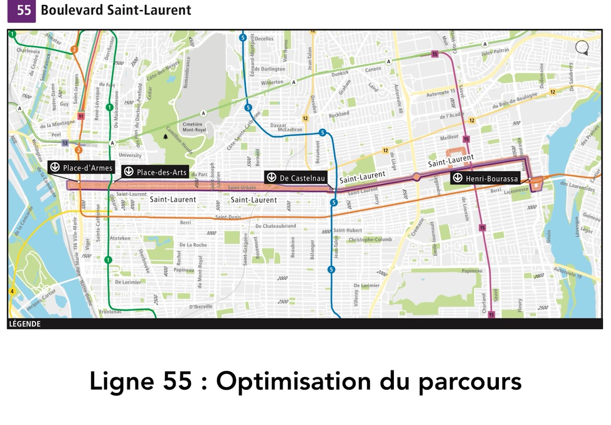
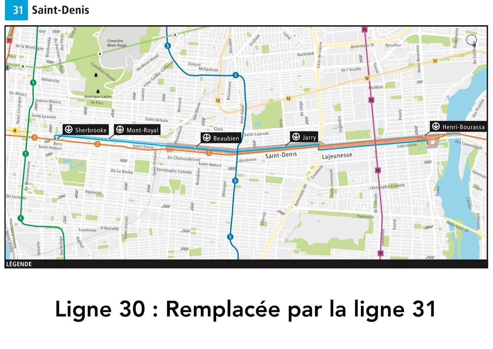

Une refonte du réseau de bus arrive ce printemps avec la mise en service de l'antenne A3 du REM vers l'Ouest de l'île! Bien que les changements touchent davantage d'autres secteurs de l'île de Montréal, cinq lignes passant sur le Plateau sont touchées, et quelques nouveautés sont très intéressantes.
🚌 Ligne 11 : Parc-du-Mont-Royal
La ligne 11 sera prolongée à l'ouest jusqu'à la station de métro Côte-des-Neiges. En plus d'offrir un nouvel accès au Mont-Royal pour les usagers de la ligne bleue du métro, ce prolongement offrira aussi un nouvel accès à la ligne bleue pour les résidents du Plateau.

🚌 Ligne 46 : Casgrain
La ligne sera supprimée mais intégrée à la ligne 119 - Rockland. Cette ligne offre donc un nouveau lien entre la station Laurier, la ligne bleue (5) du métro (station Outremont), et le REM (station Ville-de-Mont-Royal). Cette modification de la ligne 119 est très intéressante puisqu'elle crée un nouveau lien entre trois lignes de métro, dessert le secteur nord du Mile End (Bernard) et le secteur d'emplois Casgrain.


🚌 Ligne 51 : Édouard-Montpetit
La fréquence de service sera augmentée pour la portion ouest de la ligne, entre la Gare Montréal-Ouest et Snowdon. Bien que cela n'ait pas d'impact direct sur le Plateau, il s'agit de la portion la plus achalandée de la ligne, et l'augmentation de la fréquence sur ce segment pourra donc améliorer la ponctualité sur toute la ligne.
🚌 Ligne 55 : Saint-Laurent
Dans l'arrondissement Ahuntsic-Cartierville, le parcours en direction nord élimine un passage par l'avenue de l'Esplanade, ce qui offre une desserte plus linéaire du Boulevard Saint-Laurent, et réduira ainsi le temps de parcours. Cela pourra potentiellement améliorer la ponctualité de la ligne, et réduira le temps de trajet pour certains usagers.

🚌 Ligne 30 : Saint-Denis
La ligne est supprimée, mais la ligne 31 est prolongée. En ce moment, la ligne 30 dessert l'axe de la rue Saint-Denis au complet, et la ligne 31 dessert Saint-Denis entre la station Rosemont et Henri-Bourassa. Dorénavant, la ligne 31 desservira l'axe au complet.

Conclusion: Cette refonte du réseau de bus présente plusieurs opportunités intéressantes pour les résidents du Plateau-Mont-Royal. Les améliorations apportées, notamment aux lignes 11, 119 (anciennement 46), et 31, renforceront la connectivité du quartier avec le reste de l'île et faciliteront l'accès aux nouvelles stations du REM.
Lire le communiqué STM complet →